Pompa Sibel Anda WAJIB memakai Panel Sibel. Namun, jika jarak kabel SR/Twist dari KWH meter ke titik rumah pompa mencapai 300m - 1200m, Anda butuh ATD Power! ATD Power berfungsi murni untuk menaikkan tegangan yang drop akibat konduktor kabel yang terlalu panjang. Kami melayani perakitan Panel Sibel 4 HP (1 Phase + Timer & ATD Power 5500 Watt).
Pesan ATD Power Sekarang!Melayani pesanan ATD Power untuk Sibel dengan jarak tarikan kabel 300m - 1200m dari KWH meter. Arus yang hilang di jalan bukan lagi masalah.
Perakitan Panel Sibel untuk 4 HP Listrik. Format 1 Phase + Timer & ATD Power (1 Phase 5500 Watt). Komponen kuat, dinamo aman sentosa.
Workshop kami berada di Mojoagung, Jombang. Kami melayani pesanan dan pengiriman aman untuk seluruh kota dan kabupaten di wilayah Jawa Timur.
Jangan biarkan tegangan drop merusak pompa Anda. Silakan lihat sendiri dokumentasi pemasangan tim kami di lapangan. Dari Nganjuk hingga Mojokerto, semuanya sukses tegangan normal!
| No. | Deskripsi Pekerjaan & Titik Masalah | Link Video | Platform |
|---|---|---|---|
| 1 | Pemasangan ATD POWER Jarak Kabel 1000 M dari KWH Meter | Tonton Bukti | TikTok |
| 2 | Jarak KWH meter 720 M, Tegangan Drop 150 V, Naik Jadi 234 V (Normal) | Tonton Bukti | TikTok |
| 3 | Pemasangan ATD POWER Jarak Kabel 210 M dari KWH Meter | Tonton Bukti | TikTok |
| 4 | Pemasangan ATP Power Jarak 200 m dari KWH Meter | Tonton Bukti | TikTok |
| 5 | Pompa Celup SELVA Lokasi Podoroto Kesamben-Jombang | Tonton Bukti | TikTok |
| 6 | 🔥 Panel SIBEL 4 HP 1 Phase + ATD Power (Jarak 350 M - Jombang) | Tonton Spesial | TikTok |
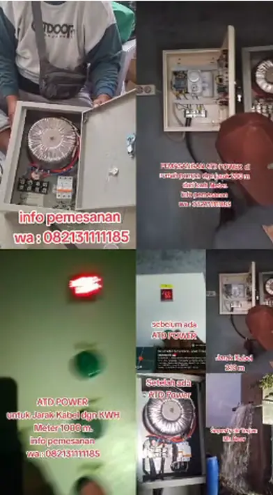
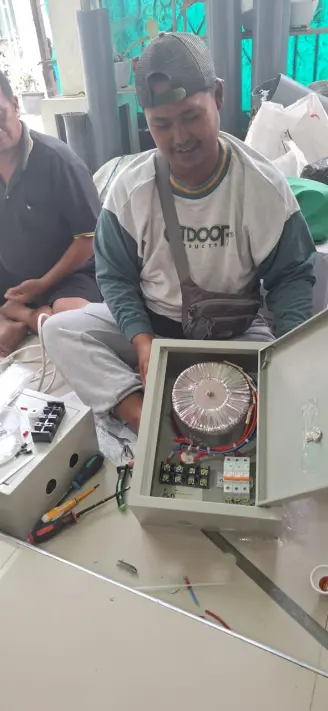
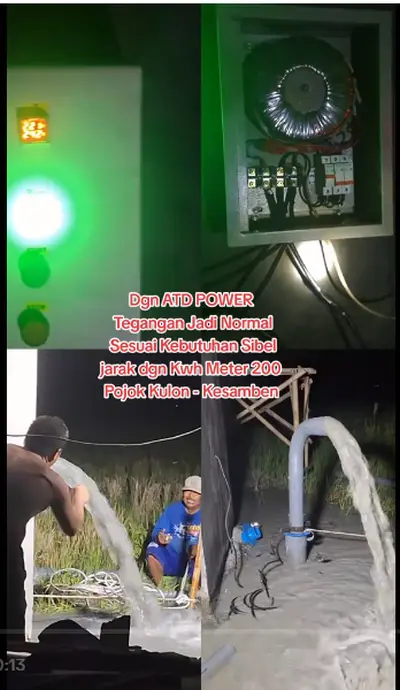
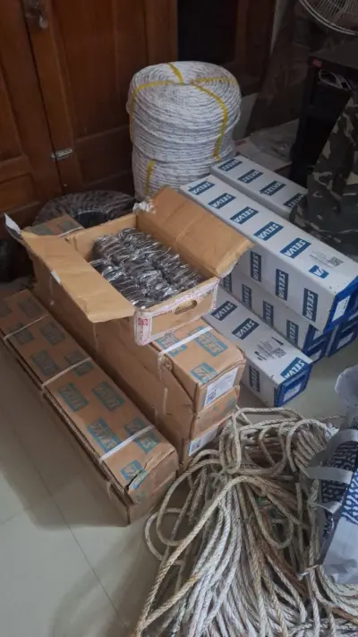
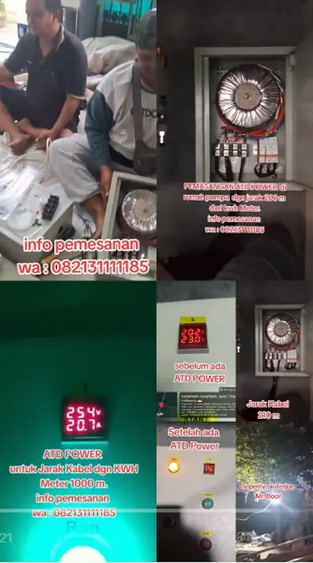
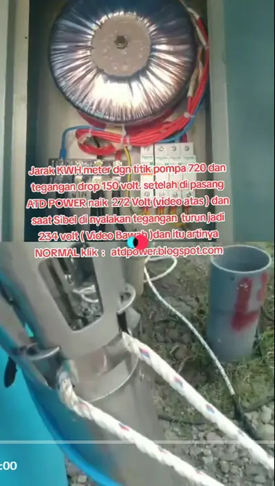
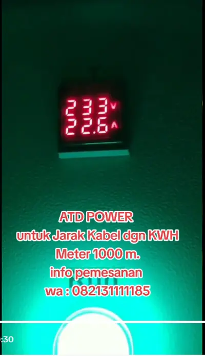
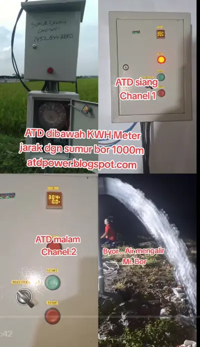
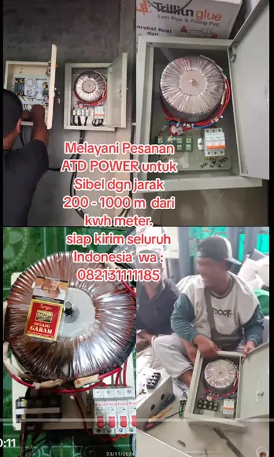
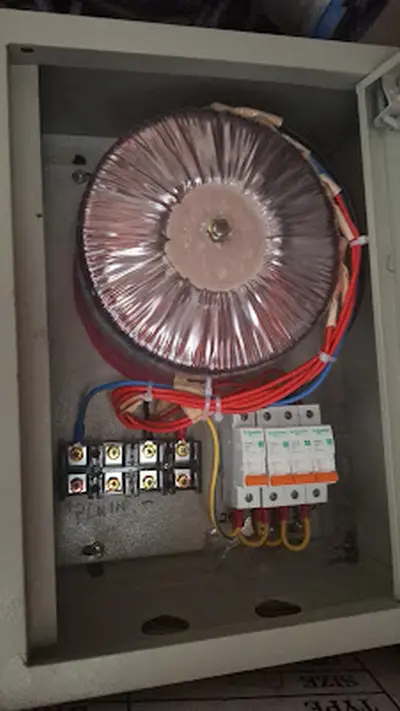
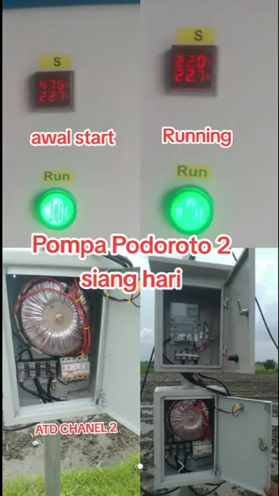
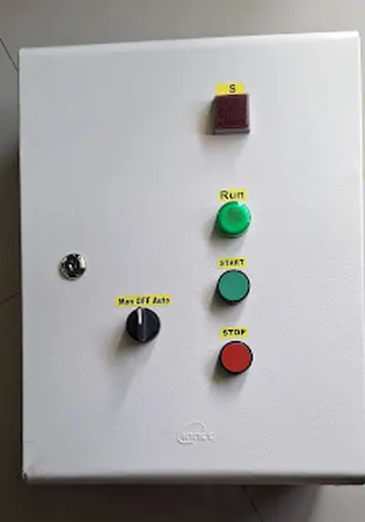
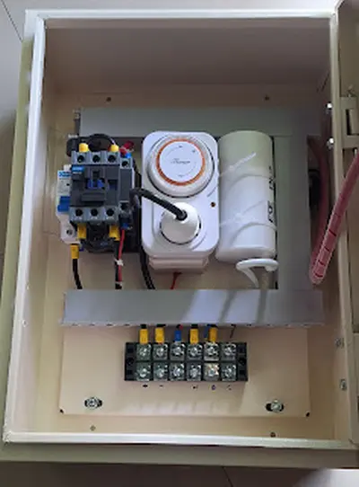
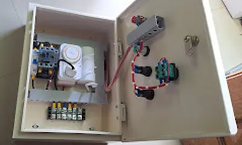
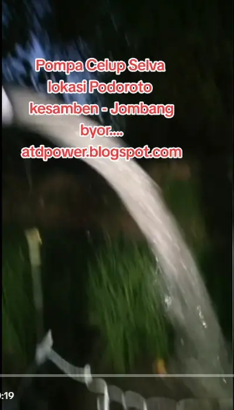
Kehilangan arus rentan terjadi. ATD Power didesain menaikkan tegangan yang drop akibat tarikan ekstrem.
Tanya Solusi Nganjuk →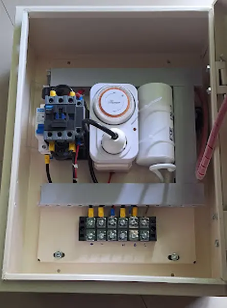
KediriMengembalikan tegangan listrik yang drop dari 125 volt menjadi stabil 220V+ demi keamanan pompa Anda.
Cegah Dinamo Gosong →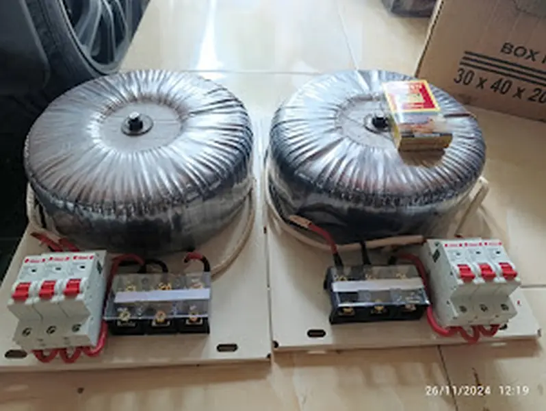
MojokertoPompa Sibel WAJIB pakai Panel. Namun ATD Power hanya dibutuhkan bila jarak kabel panjang 300m - 1200m.
Cek Spesifikasi →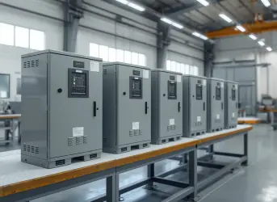
SurabayaMelayani perakitan Panel Sibel (1 Phase + Timer) & ATD Power (5500 Watt) untuk kinerja Sibel maksimal.
Pesan Rakitan →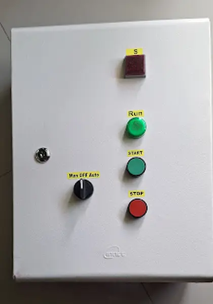
MalangMengatasi hambatan dan hilangnya arus pada kabel SR/Twist. Solusi tepat 1 Phase 5500 Watt.
Solusi Drop Tegangan →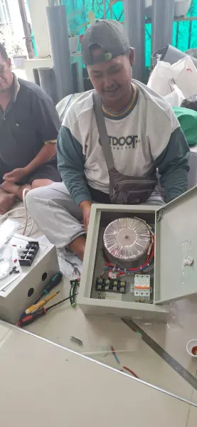
JombangProduksi ATD Power kami berpusat di Mojoagung, Jombang. Didesain kuat menahan beban awal dinamo besar.
Konsultasi Pabrik →Melayani pesanan ATD Power dan Panel Sibel. Pemasangan aman, siap kirim ke seluruh kota Jawa Timur.
Pesan Sekarang →Setiap jam Anda menunda, risiko dinamo terbakar semakin besar akibat kekurangan arus. Konsultasikan jarak kabel dan kapasitas pompa Anda kepada ahlinya hari ini juga. Gratis diskusi teknis!
Chat Tukang Rakit Sekarang - Fast Respons!